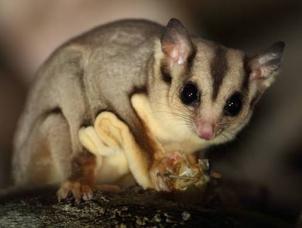

The sugar glider (Petaurus breviceps) is a small, omnivorous, arboreal, and nocturnal gliding possum. The common name refers to its predilection for sugary foods such as sap and nectar and its ability to glide through the air, much like a flying squirrel.
The genus Petaurus is believed to have originated in New Guinea during the mid Miocene epoch, approximately 18 to 24 million years ago. The modern Australian Petaurus, along with New Guinean members of what were formerly considered P. breviceps, diverged from their closest living New Guinean relatives ~9-12 mya. They probably dispersed from New Guinea to Australia between 4.8 and ~8.4 mya, with the oldest Petaurus fossils in Australia being dated to 4.46 million years.[14] This may have been possible due to sea level lowering from about 7 to 10 mya, resulting in land bridges between New Guinea and Australia.
Sugar gliders are distributed in the coastal forests of southeastern Queensland and most of New South Wales. Their distribution extends to altitudes of 2000m in the eastern ranges. In parts of its range, it may overlap with Krefft's glider (P. notatus).[5][17] The sugar glider occurs in sympatry with the squirrel glider and yellow-bellied glider; and their coexistence is permitted through niche partitioning where each species has different patterns of resource use.[18] Like all arboreal, nocturnal marsupials, sugar gliders are active at night, and they shelter during the day in tree hollows lined with leafy twigs.[19] The average home range of sugar gliders is 0.5 hectares (1.2 acres), and is largely related to the abundance of food sources;[20] density ranges from two to six individuals per hectare (0.8–2.4 per acre). Native owls (Ninox sp.)[17] are their primary predators; others in their range include kookaburras, goannas, snakes, and quolls.[21] Feral cats (Felis catus) also represent a significant threat.
The sugar glider is one of a number of volplane (gliding) possums in Australia. It glides with the fore- and hind-limbs extended at right angles to the body, with feet flexed upwards.[26] The animal launches itself from a tree, spreading its limbs to expose the gliding membranes. This creates an aerofoil enabling it to glide 50 metres (55 yards) or more.[29] For every 1.82 m (6 ft 0 in) travelled horizontally when gliding, it falls 1 m (3 ft 3 in).[26] Steering is controlled by moving limbs and adjusting the tension of the gliding membrane; for example, to turn left, the left forearm is lowered below the right.